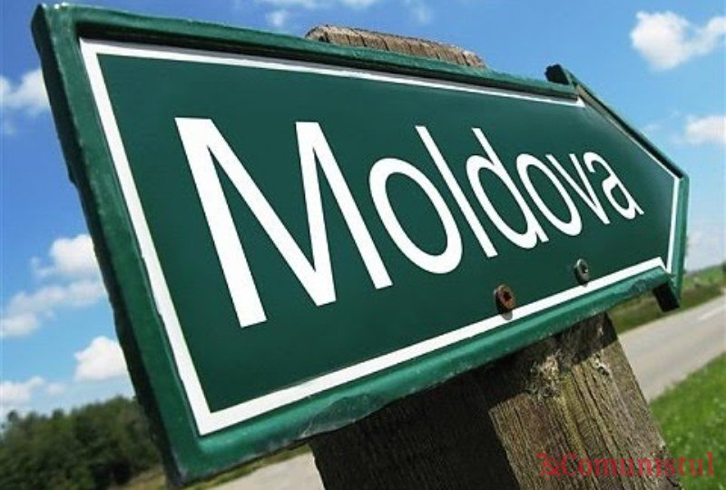

Turism
Rezervația peisagistică Trebujeni. Rezervația peisagistică Trebujeni este formată din defilee, stîncile și peșterile aflate în ele, canioanele Răututlui și afluenților lui Ivancea și Drăghinici între satele Furceni și Trebujeni cu o suprafață de circa 500 de ha. Albia Răutului aici întretaie un șir de stînci calcaroase de origine sarmațiană, formînd maluri abrupte, vaduri, cascade. O mare parte a cestui landșaft ocupă masivele de pădure Furceni (189 ha) și Trebujeni (497 ha), formate din gorunete monodominante. Pe pietre crește șoaldina, iar în fisurile petrelor - acul pămîntului, spinarea lupului, feriguța de stîncă, etc.
Stațiunea balneologică ”Nufărul alb”. Pe baza apelor minerale de la Cahul s-a construit o stațiune balneologică - ”Nufărul alb”. Aceste ape, depistate în 1956, după o anumită exploatare geologică, s-au dovedit foarte prețioase, ele avînd o componență chimică și energetică unică. Fiind constituită din săruri sulfuroase medii (78 mg/l), clorură de natriu și iod (22 mg/l), brom (136 mg/l) cu o mineralizare scăzută, aceste ape sînt considerate pentru tratament bune și foarte bune.Capacitatea stațiunii este de 500 de locuri. Apa cahuleană este folosită la tratamentul aparatului locomotor și cardiovascular, sistemului nervos central și periferic, maladiilor ficatului și rinichilor, schimbului de substanțe, tractului gastro-intestinal, precum și a maladiilor ginecologice și dermatologice. Stațiunea primește pacienți și din România, Ucraine, Federația Rusă, Belarus, Israel, Turcia, Polonia, Ungaria și din alte state. Se fac încercări de a folosi apele minerale pentru tratament la Vulcănești. (ape asemănătoare cu cele de tipul ”Esentuki” - 4) și Ceadîr-Lunga (asemănătoare cu ”Esentuki” - 4 și 7).În inima Codrului Tigheciului lîngă mănăstirea aflată aproape de satiul Haragîș se află Fîntîna Zînelor cu apă obișnuită, veche de circa o sută de ani. Un izvor cu apă obișnuită, luat sub ocrotire, se află la marginea satului Copceac, jud. Cahul.
Peștera Surprizelor. La circa 2 km de Criuleni, în fîșia de pădure de pe malul drept al Nistrului se află ”Peștera Surprizelor” cu relicve din perioada Sarmatului cu colonii de lilieci, descoperită prin anii 70ai sec. XX. Peștera are 3 niveluri cu numeroase săli, avene, tuneluri înșirate pe o lungime de aproximativ 1700 m. Multe dintre încăperi au primit denumiri care într-o oarecare măsură le caracterizează: ”Camera mare”, ”Tunelul”, ”Șaua”, ”Pervazul”, ”Cinematograful”; ”Tăișul”, ”Canionul”. Este necesar ca peștera să fie luată sub ocrotire, interiorul și exteriorul (intrarea în ea), menținute în curățenie. Pot fi vizitate și alte monumente geologice cum ar fi grotele și peșterile în stîncă și defileul cu stînci recifale de la Văratic, comuna Puhoi.
Stațiunea balneologică ”Codru”. Apa minerală de la Hîrjauca se folosește pentru tratamentul mai multor maladii. Aici se află cunoscuta stațiune balneologică ”Codru”, care funcționează pe baza apei minerale locale curative cu conținut de hidrocarbonate, sulfat și natriu, similară cu apele ”Essentuki - 17”, ”Jermuc” și ”Berezovski” și nămolul adus aici în cisterne de la Kuialnik (de lîngă Odesa). Sînt tratate maladiile tractului digestiv (gastrite, colite, hepatite, colicistite, pancreatite cronice, ulcer gastric și duodenal, diskinezie biliară), ale aparatului locomotor și de sprijin (artroze, artrite, osteohondroză, poliartrită), ale sistemului nervos central și periferic (radiculite, polinevrite, nevroze), ginecologice și prostatice cronice.
Policlinica de aici oferă un complex de tratamente fizioterapeutice, irigări intestinale, diagnostice funcționale, băi de salvie, acupunctură, masaj manual și subacvatic. O bună perspectivă are tratamentul postoperațional al diferitor maladii. Pădurea de făget-cărpinet cu stejari (unii stejari au vîrsta de 200 - 250 de ani), viile și livezile, pășunile de pe povîrnișurile satelor Hîrjauca, vecinătatea mănăstirilor Hîrbovăț, Răciula, Frumoasa și Hîncu, toate acestea formează un ansamblu pitoresc ce contribuie la o adevărată terapie sub cerul liber.
Stațiunea are o capacitate zilnică de cazare pentru 600 de pacienți, ea fiind folosită numai la nivel de 41-42%. Dacă întrecut circa 90% din pacienți erau din fostele republici unionale, în prezent majoritatea lor sînt di Republica Moldova. Se fac încercări de modernizare a stațiunii în scopul tragerii mai multor pacienți din alte state. Această minunată stațiune, utilată cu aparataj medical de import este încă slab cunoscută la noi și peste hotarele țării.
Complexul geologico-paleontologic ”Văgăuna Clocot”. Un monument de însemnătate mondială este complexul geologico-palentologic ”Văgăuna Clocot” de lîngă comuna Blijnii Hutor din apropierea marginii de nord a mun. Tiraspol. Văgăuna prezintă un profil geologic de reper, de o claritate uimitoare, în care a fost depistată o concentrare unică a fosilelor și faunei din pleistocen. Comorile văgăunei au fost cercetate încă în a doua jum. a sec. XIX și confirmate în prima pătrime a sec. XX (1906, 1910,1925). Cercetarea sistematică a stratigrafiei și florei Văgăunii a început în anii 60 ai sec. XX cu participarea geologilor și paleontologilor din Republica Moldova, Ucraina și Rusia. Datorită acestui monument unic în anii 1969, 1971, 1980, 1982, 1984, 1986 în Republica Moldova au fost organizate conferințe unionale și congrese internaționale ale geologilor. În qnul 1988 aici au lucrat geologi din Ungaria și China.
În Văgăună, în sectorul de nord al unei cariere vechi, care s-a exploatat în ultimele decenii, pe o suprafață de 14 ha s-a păstrat cea mai valoroasă decopertare stratigrafică cu o grosime de 30 m din epoca pleistocenului cuantenar în care se identifică o colecție completă de straturi (peste 16) formate în timpuri și condiții geografice diferite, care conține un material bogat despre fauna, flora și condițiile naturale de cîndva, după care se poate urmări istoria evoluției naturii meleagului nostru pe parcursul ultimilor 700 mii de ani. Datorită plenitudinii sale, depunerile paleontologice de aici servesc drept etalon printre depunerile cuanternare din întreaga Europă.
Avînd în vedere unicitatea și plenitudinea obiectelor paleontologice din Văgăuna Clocot, importanța lor științifică, în 1975 două hectare de teren de aici au fost luate sub ocrotirea statului în calitate de monument natural geologico-paleontologic. Văgăuna Clocot trebuie să devină un muzeu geologico-paleontologic sub cerul liber, ocrotit de stat. Cea mai valoroasă colecție de materiale adunate duin Văgăună se păstrează în Muzeul paleontologic al AȘM
Rezervația Valea Adîncă. Din totalul de 19 rezervații peisagistice și naturale ale regiunii Nistrului de Mijloc, un interes deosebit reprezintă rezervația Valea Adîncă, care include trei defilee cu maluri înalte de pînă la 180 m și prăpăstioase (unul dintre care abundent împădurit, se dechide spre Nistru chiar în centrul satului Rașcov), stînci ciudate străpunse de grote și peșteri greu accesibile pentru vizitatori. Vegetația silvică (cu specii de stejari, frasini, arțati, tei), cu un covor ierbos în care se întîlnesc specii rare (drobișorul, siminocul, clopoței, garofițe) s-a păstrat destul de bine. În locuri prăpăstioase, pe stînci se dezvoltă se dezvoltă vegetația pietrofită. Văile (fundurile) defileelor sînt uscate, deaoerece apele izvoarelor se pierd în golurile carstice.
Pădurea Domnească. Un interes deosebit (chiar la scară europeană) reprezintă rezervația științifică ”Pădurea Domnească”, și care ocupă o suprafață de 6032 ha (inclusiv păduri - 5160 ha). Ea se întinde de la rezervația peisagstică ”Suta de Movile” din regiunea de nord-vest pee o lungime de peste 40 km în jos pe malul stîng al Prutului, între satele Cobani și Pruteni. Rezervația a fost creată în scopul păstrării celui mai reprezentativ areal de pădure de luncă și mlaștini (este cel mai bătrîn masiv forestier din ținut și una din cele mai vechi păduri de luncă din Europa), conservării, regenerării ecologice și restabilirii biodiversității ecositemelor din luncă. Vegetația de aici s-a format atît sub influența regimului apelor Prutului, cît și a sistemului de gîrle în care pătrundeau apele rîului și ale afluentului lui Camenca pînă la construcția barajului Costești-Stînca. În rezervație s-au păstrat vreo 730 specii de plante din cele 1200 ale florei autohtone, înregistrate în republică și peste 200 specii de animale. Cea mai mare parte a pădurii naturale din rezervație este alcătuită din arborete de stejar pedunculat (1017,7 ha), plop negru (34,8 ha). Diintre alte specii se întîlnesc frasinul, arinul alb și negru, salcia moale, etc.
Pe teritoriul rezervației ”Pădurea Domnească”, în apropierea satului Moara Domnească se află cea mai mare grupare de stejari seculari din Republica Moldova. Aici sînt cîteva pîlcuri cu o suprafață totală de 108 ha cu arbori, vîrsta cărora depășește 200-250 de ani, unii atingînd înălțimea de 30 metri și mai mult. Printre ei se află un stejar viguros de 450 de ani, avînd o înălțime de peste 35 metri și lungimea circumferinței tulpinii la nivelul staturii umane de peste 9 metri.
Din subarboret fac parte alunul, coacăzul, vița de vie sălbatică (de pădure), dumbrăvița, sparanghelul, angelica, laleaua pestriță, ghiocelul alb, viorelele, bujorul, lăcrămioara. Această floră de baltă și de stepă formează o oază de adăpost pentru fauna sărăcită din republică. În rezervație sînt atestate peste 80 de specii de plante rare, incluse în cartea roșiea Republicii Moldova. Din speciile faunistice rare de aici fac parte cerbul nobil, jderul d pădure, jderul depiatră, pisica sălbatică, vidra, nevăstuica; din păsărri - lopătarul, lebăda, egreta mare albă, ciocănitoarea neagră. Se întîlnește broasca țestoasă de bltă ș.a. Sînt căprioare și mistreți.
În rezervație, în apropierea satului Balatina există o colonie unică de păsări de baltă (peste 100 de cuiburi) cu denumirea de ”Țara Bîtlanilor”. Colonia este formată din stîrcul (bîtlanul) cenușiu, stîrcul de noapte, egreta mică, păsări elegante și rare.Stabilirea egretei a determinat prezența și concentrarea în acest loc a unor specii de răpitoare, cum ar fi pisica sălbatică, vulpea, jderul de pădure, cîinele enot.
Turism vitivinicol.
Vinăria „Mileştii Mici”
Crama de la Mileştii Mici a intrat în 2007 în Cartea Recordurilor, după ce a fost validată ca fiind cea mai lungă din lume şi cu cea mai mare capacitate de depozitare. La ora actuală, reprezintă un
oraş vinicol subteran cu o lungime totală a galeriilor de peste 200 kilometri, cu străzi ce poartă numele vinurilor renumite şi de-a lungul cărora sunt amplasate budane de stejar şi cisterne cu o capacitate totală de 65 de milioane de litri,
cu cascade subterane, săli de degustare şi cişmele. În Colecţia de aur a Combinatului de Vinuri „Mileştii Mici” se păstrează circa două milioane de butelii de vinuri alese. Mai puteţi vizita „Moşia lui Maniuc Bei” şi depozitele de vin „Mileştii
Mici”.
Vinăria Purcari
La sudul Moldovei, într-o zonă liniştită, pe o muchie de deal, se înalţă o cetate renovată. Anume aici se produc minunatele vinuri de Purcari, apreciate cu premii şi medalii la cele mai importante festivaluri
internaţionale în ultimii 150 de ani. Ar fi păcat să vizitezi ţara noastră şi să nu guşti din vinul de Purcari pe care, cică, însăşi Regina Marii Britanii îl servea în fiecare zi la masă, încă din 1974. Vinăria se mândreşte cu galerii subterane
care adăpostesc o colecţie remarcabilă de vinuri cu brandul Purcari, printre care se numără exemplare care datează încă din anul 1948. Vinurile din Purcari concurează cu cele mai renumite vinuri din Burgundia şi Bordeaux. „Negru de Purcari”
a înfrumuseţat masa împăratului rus Nicolai II, iar în beciurile de vin ale reginei britanice Victoria, care era cunoscută datorită gusturilor sale exigente, întotdeauna s-a păstrat vinul din Purcari. Aceste vinuri au obţinut mai mult de 30
de medalii la diferite concursuri.
Vinăria Cricova
Cele mai mari beciuri din lume se găsesc în Moldova, la doar câţiva kilometri spre nord de Chişinău, în localitatea Cricova. Aici se întinde în subteran un adevărat oraş al vinificatorilor, cu străzi,
săli de degustare, depozite etc. Lungimea totală a galeriilor de la Cricova depăşeşte 60 km în subteran. În liniştea subsolurilor de aici, 30 milioane de litri de vin îşi capătă calităţile sale preţioase şi incomparabile. Pe străzile subterane
„Cabernet”, „Feteasca”, „Pinot” se pot deplasa autobuze cu turişti, însoţiţi de ghizi experimentaţi. Vinoteca Cricova dispune de cea mai bogată colecţie pe întreg spaţiul ex-sovietic. În Cricova sunt produse vinuri spumante, respectându-se
cu stricteţe tehnologia clasică franceză. Astfel, Cricova a devenit o veritabilă carte de vizită a Moldovei.
Chateau Vartely
Chateau Vartely este un complex turistic modern, aflat la doar 45 km departare de Chișinau, în apropierea orașului Orhei. Standarte occidentale, deservire profesională, programe speciale – toate acestea le propune complexul turistic "Chateau Vartely”
– ce reprezinta 4 case de tip hotelier, 2 săli de restaurant, 3 săli pentru degustare, o curte interioara imensa amenjată, special pentru a vă simți liber și confortabil în sânul naturii.
Compania “Chateau Vartely”, va întîlni ospitalier
pe fiecare vizitator în gospodăria sa vinicolă, transformînd degustarea într-o adevărată sărbătoare pentru acei, care măcar o clipă a încercat să pătrundă în tainele acestor băuturi divine. În aşa fel, fiecare vizitator poate să aleagă vinul
care cel mai mult îi convine. Fiindcă, în Moldova nici un vin nu-l repetă pe celălalt. Cunoscătorii, vor descoperi un buchet de vinuri, care aminteşte dinamismul şi rafinamentul dansului moldovenesc. Ve-ţi fi ajutaţi să înţelegeţi mai bine
Moldova – unica ţară pe harta lumii, care prin configurarea sa seamănă cu un strugure de poamă.
Beciurile din Brănești
Beciurile din Brănești sunt situate intr-o zona frumoasă de padure, în coasta Orheiului Vechi. Pivnițele din Branești se întind pe o distanta de 58 km la o adincime de 60 m sub pamint si au o suprafata de 75 ha.
Pivnitele din Branesti
dispun de 2 sali de degustare cu o arhitectura impresionanta, una dintre ele se afla chiar în mediul subteran. Acestea sunt lucrate în lemn și metal și reproduc imagini legate de cultivarea viței de vie și de producere a vinului.
Remediindu-va în acest loc minunat, placerea va fi mult mai mare cind veți degusta cele mai bune vinuri si veți servi bucate traditionale, zeama ca la Branesti, placintele, mici ca la Branesti, tocanita din iepure si alte bucate preparate
de bucatari iscusiti.
Aici veti avea posibilitatea să savurați vinuri albe fine si roșii de colecție, vinuri spumante, bucate tradiționale moldovenești.
Turism cultural.
Muzeul Naţional de Artă din Moldova. Muzeul Naţional de Artă din Moldova, amplasat în centrul oraşului Chişinău, este singura instituţie de acest profil din Republica Moldova. Muzeul are în gestiune trei edificii reprezentative, monumente de arhitectură de la cumpăna sec. XIX-XX. Casa Vladimir Herţa, construită în 1906, reprezintă o mostră de barocco vienez, cu numeroase ornamente modelate pe faţada principală. Este unul dintre cele mai frumoase edificii istorice din Chişinău, având un farmec deosebit, graţie decoraţiei somptuoase. Un bogat veşmânt decorativ în relief este plasat în partea superioară a faţadei principale, încununate cu cupole de diverse forme. Printre autorii proiectului imobilului se remarcă arhitectul austriac Heinrich Lonski, care a mai realizat în Chişinău şi clădirea Adunării Nobilimii. Casa Kligman, cel de-al doilea edificiu, construit în anul 1897, a aparţinut avocatului Moisei Kligman şi se caracterizează prin stilul neoclasicist în care predomină linia şi rigoarea. Se crede că arhitectul proiectului acestui edificiu a fost Mihail Cecheruli-Cuş. Din anul 1989, întreaga activitate expoziţională şi administrativă a Muzeului Naţional de Artă al Moldovei se desfăşoară în sediul Natalia Dadiani. Construit în 1900-1901, după un proiect al arhitectului Alexandru Bernardazzi şi specific stilului neoclasicist cu elemente gotice, acest edificiu rămâne un model al arhitecturii civile de la sfârşitul sec. XIX- începutul sec. XX. Clădirea, construită la iniţiativa principesei Natalia Dadiani şi finanţată de aceasta, a găzduit un gimnaziu de fete, care a purtat numele principesei până în 1940. Actualmente, patrimoniul Muzeului Naţional de Artă al Moldovei numără peste 39 000 de opere şi reflectă dezvoltarea artelor plastice din sec. XV-XXI.
Cetatea Tighina este cea mai puternică dintre cetățile medievale ale Moldovei, este menționată sub această denumire pentru prima dată în gramota domnitorului Alexandru cel Bun în 1408. La origine cetatea are un punct fortificat al romanilor, după care a fost reconstruită de genovezi și apoi ridicată la rang mare de cetate de apărare în sec. XVI de către Ștefan cel Mare.
Ca și cetatea Sorocii, această fortăreață a fost zidită în piatră pe timpul lui Petru Rareș, conform unui plan patrulater cu turnuri rotunde și dreptunghiulare. Fiind cucerită în 1538 de către sultanul turc Soliman Magnificul, este reconstruită după proiectul arhitectului Sinan, devenind reședință turcească, numită Bender (din turcă - ”port”). În 1705 - 1707 suprafața cetății este lărgită și modernizată sub supravegherea turcilor de către domnitorul Moldovei Antioh Cantemir.
Cetatea Tighina se constituie într-un ansamblu arhitectonic cu plan în formă de patrulater neregulat, înconjurat de ziduri late, cu grosimea de 2,3 - 3 m și înalte, din piatră de calcar și cărămidă, avînd 10 bastioane pentru artilerie la colțuri și 11 turnuri și 6 porți, fiind înconjurată de un șanț de piatră. După ultima luptă din cadrul războaielor ruso-turcești, în 1806 cetatea a intrat în posesia autorităților militare imperiale rusești, acestea devenind stăpîne ”legitime” aici în 1812, după ocuparea Basarabiei. Din 1944 în cetate se instaurează unitățile militare sovietice, devenite din 1991 de ocupație, ale Federației Ruse, care au rămas aici pînă în prezent.
Muzeul Național de Etnografie și Istorie Naturală
Muzeul Național de Etnografie și Istorie Naturală a fost fondat în 1889 și este cel mai vechi muzeu din Republica Moldova, fiind și deținătorul celor mai bogate și valoroase colecții.Pe percursul a mai bine de un secol el a acumulat un patrimoniu
de pste 135 de mii de piese de valoare națională, europeană, și mondială, multe dintre ele fiind expuse și în țările Europei, Americii, Asiei și Africii.
Fondul muzeului este alcătuit din colecții ce reflectă istoria natural, natura, etnografia,
arheologia, istoria, cărțile vechi ș.a.
Colecțiile petrografice și paleontologice reflect istoria geololgică a Pămîntului și evoluția lumii organice, conținînd relicve ale florei și faunei, care s-au perindat în diverse perioade
geologice. Mîndria Muzeului o constituie scheletul integral al unui Deinotherium gigantissimus cu vîrsta de 7 milioane de ani.
Natura contemporană este repreyentată prin colecțiile botanice și zoologice. Un interes deosebit prezintă
ierbarul și animalele naturalizate la sf. sec. al XIX-lea – înc. sec. al XX-lea, speciile deja dispărute din mediul natural al Republicii Moldova. Grădina Botanică, organizată în 1906 în preajma muzeului, completează colecțiile botanice.
Evoluția culturii comunităților umane este reflectată în colecții arheologice, numismatice, istorice, etnografice și de artă. În custodia Muzeului se află renumitele tezaure de la Cărbuna, Chetroșica și Lărguța, valoroase colecții de port
popular, ceramic, țesături, arhitectură populară, mobilier, instrumente muzicale, etc. Aici se păstrează cea mai reprezentativă colecție de covoare moldovenești (sec. XVIII-XX).
Expoziția de bază a Muzeului - Natura. Omul. Cultura - propune
o incursiune în istoricul relațiilor dintre om și natură, făcînd relevante procesele complexe, de mare importanță prin înțelegerea rostului omului în Univers.
Muzeul mai oferă și o sală de expoziții temporare (tematice), în care se organizează
vernisaje atît din colecțiile proprii, cît și din colecțiile ale altor muzee.
Muzeul Național de Etnografie și Istorie Naturală este amplasat în central orașului Chișinău, alcătuind un complex architectural-istoric din perioada modernă.
Adresa muzeului: mun. Chișinău, str. M. Kogălniceanu, nr. 82.
Program: marți – duminică între orele 10.00 – 17.00.
Tel.: (+ 373 2) 24.40.02; 24.00.56
Cetatea Soroca
Cetatea Soroca este unicul monument al epocii medievale din spaţiul pruto-nistrean, care s-a păstrat aproape integral. Este construită din piatră şi situată pe cursul de mijloc al Nistrului, unde existau patru vaduri: Otaci, Soroca, Vadu Raşcov şi Rîbniţa. A apărut pe locul unei factorii genoveze, o străveche colonie cu numele „Olihonia”, menţionată şi în cunoscuta lucrare a lui D. Cantemir „Descrierea Moldovei”. Construită la 1499 din porunca lui Ştefan сel Mare din lemn şi pămînt, reconstruită de Petru Rareş în timpul celei de-a doua domnii, de meşteri din Transilvania, care cunoşteau rînduiala cetăţilor mediteraniene. Are analogie, în unele elemente de fortificaţie şi apărare cu Castelul del Monte (Italia), şi cu cele de la Queenborough, Walmer şi Deal din comitatul Kent, Anglia.
Muzeul „Casa Bunicii”
Pe malul rîului Prut, în s. Bisericani, com. Cuhneşti, r-nul Glodeni a fost inaugurat muzeul „Casa Bunicii”. Ideea în sine nu este inedită. Şi la Predeal, pe Valea Prahovei găsiţi un muzeu cu acelaşi nume. Mai mult, în s. Palanca, r-nul Călăraşi puteţi vizita muzeul „Casa Părintească".
Gazdă a muzeului „Casa Bunicii” este dna Nina Ceban, care realizînd această idee i-a adus un omagiu mamei sale, Natalia Ceban, rămasă văduvă de război cu patru copii…
Muzeul este situat într-o casă tradiţională de ţară cu o tindă şi trei odăi, una dintre care este Casa mare. Muzeul îşi propune repunerea în valoare a tradiţiilor, obiceiurilor şi îndeletnicirilor bunicilor şi străbunicilor noastre, cum ar fi torsul şi ţesutul lînii, confecţionarea diverselor obiecte, pe care noi astăzi le numim de artizanat.
Îmbinînd perfect tradiţiile muzeale de prezentare a obiectelor, cu cele ale turismului rural de plasare în cadrul vieţii satului, muzeul oferă vizitatorilor bucate tradiţionale, plimbări cu căruţa trasă de doi cai, vizitarea stînii din apropiere ş.a.
Muzeul Găgăuz de Istorie și Etnografie
Muzeul Găgăuz Național de Istorie și Etnografie a fost fondat în satul Beșalma la 16 septembrie 1966. Din 1988 muzeul poartă numele fondatorului său D. N. Cara Cioban, om ilustru care a contribuit la dezvoltarea mai multor domenii de artă. După
absolvirea institutului de literatură "M. Gorki" din Moscova el a devenit membru al Uniunii Scriitorilor din URSS. D.N. Cara Cioban este autorul a 12 culegeri de povești, poezii și piese. Era interesat de pctură, sculptură și arta cinematografiei.
Pedagog talentat, D.N. Cara Cioban se numără printre primii profesori de limbă găgăuză, predînd acest obiect între anii 1958 – 1962. Dar pasiunea cea mare a ilustrului om a fost muzeul.
Din 1972 Muzeul Găgăuz de Istorie și Etnografie a
devenit o instituție de stat. În același an acesta a fost transferat într-o clădire cu o suprafață de circa 640 m.p. Ea include 6 săli expoziționale. În fondurile muzeului sunt adunate circa 6000 de exponate. În sălile de expoziție sunt prezentate
operele celor mai renumiți artiști plastici din Moldova și Găgăuzia.
Expoziția ilustrează istoria, viața cotidiană și cultura găgăuzilor din cele mai vechi timpuri pînă în prezent. Muzeul conține originale și copii ale lucrărilor savanților
în domeniul etnogenezei, istoriei și etnografiei găgăuzilor, precum și o cinefonotecă bogată. Aici sunt prezentate exponate de unicat ale costumului național găgăuz, podoabe femeiești tradiționale, unelte de muncă, obiecte de uz casnic și
de etnografie ale țăranilor găgăuzi de la sf. sec. XIX– înc. sec. XX.
Vizitatorii muzeului au posibilitatea de a face cunoștință cu ceremoniile nunțiale, datinile și obiceiurile poporului găgăuz.
Clădirea muzeului este amplasată în
centrul satului Beșalma. Această așezare rurală cu o populație de 5 mii de locuitori a fost întemeiată la 1791 de coloniști din Dobrogea și numără o istorie de peste 200 de ani. Satul Beșalma se află la 30 km la sud de or. Comrat.
Adresa muzeului: str. Lenin nr. 110, s. Beșalma, Comrat, Republica Moldova
Program: marți – vineri între orele 08.30 – 16.30; sîmbătă – duminică între orele 08.30 – 14.00.
Tel.: (+ 373 38) 5.32.72
Turism religios.
Mănăstirea Căpriana
Într-o zonă pitorească de codru, în centrul Moldovei, se găseşte una dintre cele mai vechi mănăstiri din Moldova – Căpriana (întemeiată în 1429). Ea a fost ctitorită de diferiţi domnitori, printre care
şi Ştefan cel Mare, şi timp îndelungat a servit drept reşedinţă a mitropolitului Moldovei. Fiind închisă şi devastată în anii postbelici, ea se redeschide printre primele în 1989, devenind foarte curând un simbol al renaşterii naţionale. La
Căpriana a existat şi cea mai mare bibliotecă mănăstirească din Moldova, cu preţioase daruri domneşti. Tot aici mai puteţi vizita bisericile „Adormirea Maicii Domnului” (1545), „Sfântul Nicolae” (1840), „Sfântul Gheorghe” (1903); rezervaţia
peisagistică „Căpriana-Scoreni”; stejarul lui Ştefan cel Mare; cea mai veche rezervaţie din Moldova – „Codri”; mănăstirea Răciula; fabrica de vin „Cojuşna”.
Mănăstirea Saharna
La Estul Republicii, pe malul drept al râului Nistru, este situată mănăstirea „Sfânta Treime” de la Saharna, considerată, pe bună dreptate, printre cele mai mari centre de pelerinaje religioase din Moldova.
Aici se găsesc unicele în republică moaşte ale Sf. Cuvios Macarie, iar pe una din stânci – amprenta lăsată, potrivit unei legende, de Maica Domnului. Pe stînciile din satul Saharna, se întind nişte peisaje de excepţie: defileul stîncos şi
împădurit al râuleţului Saharna (16 km lungime) ce saltă peste 30 de praguri şi cascade. Tot aici se găseşte o staţiune arheologică importantă, cu vestigii din epoca fierului (sec. X-VIII î.e.n.) şi o cetate de promotoriu geto-dacică (sec.
IV-III î.e.n.), una din cele mai conservate de pe teritoriul Republicii Moldova.
Mănăstirea Hîncu
Mănăstirea Hîncu este una dintre cele mai bine amenajate şi vizitate mănăstiri din Moldova. Lăcaşul a fost înfiinţat în anul 1678 şi a fost iniţial un schit pentru femei. Pe parcursul sec. XVIII, schitul a
fost ruinat şi distrus de tătari şi, în cele din urmă, complet pustiit. Însă, în sec. XIX, la insistenţa familiei Hîncu, schitul a fost restaurat şi transformat în mănăstire, unde s-au stabilit cu traiul călugări. În acelaşi timp au fost construite
ambele biserici monastice din piatră – biserica Adormirii Maicii Domnului, biserica Sfintei Paraschiva şi încăperi auxiliare. Pe timpurile sovietice, pe teritoriul mănăstirii activa sanatoriul Ministerului Sănătăţii. În preajma mănăstirii
se găsesc mai multe izvoare bogate în apă, unul dintre ele având o mineralizare sporită.
Mănăstirea Japca
Mănăstirea Japca este bine cunoscută vizitatorilor prin mănăstirea de maici de aici, care a fost singura functională în perioada sovietică. Are o poziţie rar întâlnită de alte mănăstiri, caracterizându-se
printr-o compoziţie deosebită a orizontului. Lăcaşul este ridicat pe un mal stâncos, care pare inaccesibil pentru construcţia bisericii şi chiliilor, care creează impresia unei case de lut ce stă pe o pantă. Deşi mănăstirea a fost înfiinţată
la începutul sec. XII, în urma invaziei tătarilor, aceasta a fost pustie pe parcursul a câţiva zeci de ani. Datorită stareţului venit după 1770, schitul a început să se dezvolte rapid şi în anul 1818 s-a transformat în mănăstire. În împrejurimile
mănăstirii mai pot fi vizitate rezervaţiile naturale Raşcov şi Valea Adâncă, izvorul cu apă minerală, fortificaţii antice şi aşezări paleontologice în Socola şi Raşcov.
Mănăstirea Hîrbovăț a fost zidită din piatră în 1730 de boierul Constantin Carpuz. Pe locul unei biserici mai vechi din lemn, în 1816 a fost clădită biserica “Adormirii Maicii Domnului”, reînnoită în 1828-1855. În a doua jumătate a sec. XIX (1870) a fost construită biserica de vară “Sf. Duh” și o clădire cu 3 nivele pentru chilii. A devenit vestită din 1790 prin icoana făcătoare de minuni a Maicii Domnului, care călătorea anual cu alai de la Hîrbovăț la Mitroploia din Chișinău și în sens opus.
Mănăstirea Condrița
Mănăstirea Condrița, fost schit al mănăstirii Căpriana cu hramul ”Sf. Ierarh Nicolae”, s-a înălțat în 1783 din inițiativa ieromonahului Iosif și susținută de călugării din mănăstirea Căpriana. Redeschisă în 1993. Are două biserici. Această mănăstire este prima care, după 1991, a aderat la biserica neamului - Mitropolia Basarabiei. La mănăstire este înmormîntat Dionisie Erhan (1868 - 1943), membru al Sfatului Țării, fost senator în primul Parlament al României întregite din 1918.
Mănăstirea Curchi
Mănăstirea de călugări Curchi se află la o distanță de 12 km de orașul Orhei, așezată pe pîrîul Vaticului, între bogate dealuri acoperite de codri seculari, cu grădini și livezi.
Mănăstirea este o adevărată perlă, conferind liniște și
pace sufletească, ea se înscrie în lista patrimoniului național de valoare turistică majoră.
Ansamblul monastic de la Curchi a fost atesta documentar la 1765. Curtea și construcțiile mănăstirești sunt amplasate pe două terase, înconjurate
de ziduri din piatră cu turnuri la colțuri.
Reconstruit de mai multe ori, ansamblul monastic include bisericile Sfîntul Dumitru (1773), Nașterea Maicii Domnului (1810), Tuturor Sfinților (1909), Trapezei Înălțarea Cinstitei Cruci
(1910), Sfîntul Nicolae (1937), Sfinții Trei Ierarhi (1996).
Cu regret, în perioada anilor 1959-1995 mănăstirea a fost transformată în ospiciu.
Și astăzi mănăstirea mai este în reconstrucție, deși tot mai mulți pelerini și turiști
iau calea spre acest locaș sfînt, căci așezămîntul monastic Curchi reprezintă un adevărat poem al credinței, blagoslovit de bunul Dumnezeu. Serviciile divine ținute aici, constituie principala tracție pentru pelerini.
La Mănăstirea Curchi
turiștii vor rămîne adînc impresionați de frumusețea arhitecturală a complexului, spațiul peisagistic unic, stilul de viață monahal, tradiția bucătăriei multiseculare.
În preajmă veți descoperi o prisacă, lacuri pline cu pești, teritorii
pe care cresc plante medicinale.